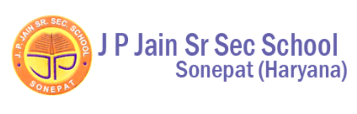

HeyArya!
HeyArya!
A bilingual math platform putting students in the chair, with Feynman & Curie as co-conspirators!
Try HeyArya! ↗Education, assistive technology, venture building and mathematics.
Featured
A bilingual math platform putting students in the chair, with Feynman & Curie as co-conspirators!
Try HeyArya! ↗Venture building · first paid hire
I built ContraConsole for ContraVC’s Fund I raise, then carried founder communication, sourcing, and diligence across MyAsiaVC.
Schools & implementation partners
Shared by HeyArya! and the Live the Learning Guide





Word game · playelsewhere.xyz
A semantic distance game: take turns picking words far from the last one. Jump too close and that’s a strike—three and you’re out.
Play Elsewhere ↗Independent assistive technology work
Three device applications in wearable communication and tactile navigation.